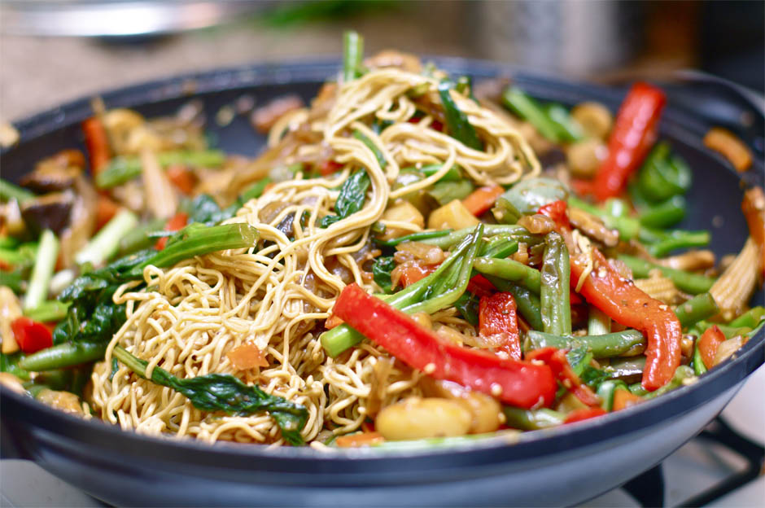
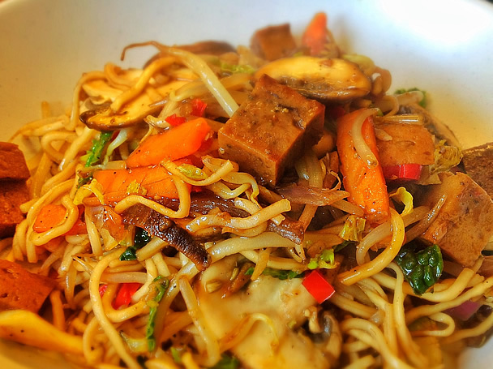
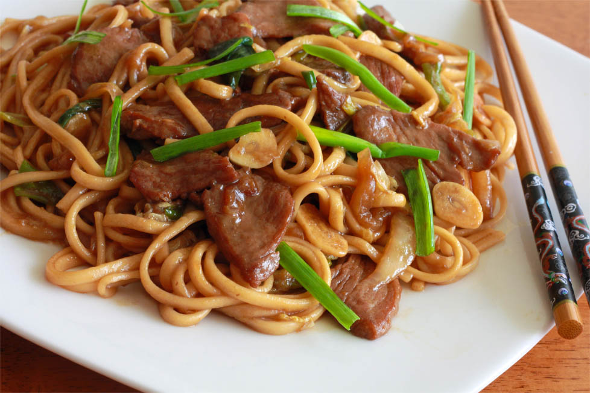

볶음라면 레시피
홍길동
Seoul,Korea
내정보변경
설정
빨간국물
하얀국물
짜장라면
비빔라면
볶음라면
냉라면
PB제품
퓨전라면
자신만의 독특한 레시피를 올리고
SNS로 공유해 보세요

매운고추잡채라면
By
라면사랑
우리나라 사람들이 좋아하는 매운맛을 고추를...
273

스팸해물볶음면
By
Ramen100
밥도둑 스팸과 다양한 제철 해산물을 이용하...
248
소고기볶음라면
By
오나라
라면으로도 가족의 부족한 영양을 채워주고 또...
198

부추고기볶음면
By
이거라면
언제나 맛있는 고기와 채소를 이용해서 신선한...
150


 273248
273248 소고기볶음라면198
소고기볶음라면198 150
150